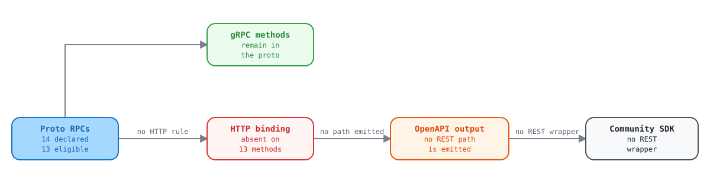

kptr and deviceconf declare public gRPC services with no HTTP bindings, so they have no REST surface at all
Report for the Kentik API / schema team
13 RPCs across two SERVICE_VISIBILITY_PUBLIC services are unreachable over REST because their google.api.http annotations are absent.
| Field | Value |
|---|---|
| Filed by | Kentik Community Python SDK |
| Date | 2026-09-18 |
| Repo | kentik/api-schema-public |
| Revision | 89684ba, 2026-09-24 (revalidated) |
| Affected RPCs | 13 (plus 3 excluded: 1 method-private, 2 likely intentional) |
| Severity | Functional gap, not a defect |
The ask
ImportantAdd
google.api.httpbindings to the 13 RPCs listed below, or tell us they are deliberately gRPC-only.Either answer is actionable. What is hard to work with today is the ambiguity: these services are annotated
SERVICE_VISIBILITY_PUBLICand ship definitions into the public schema repo, which reads as "this is public API", yet they produce zero REST paths, which reads as "this is not exposed". One of those two signals is wrong.
Summary
Every generated REST artifact in api-schema-public derives from
google.api.http annotations on RPC definitions. Where the annotation is present,
protoc-gen-openapiv2 emits a swagger path and the gRPC gateway exposes an
HTTP route. Where it is absent, neither exists.
Auditing all 35 services that declare RPCs in the current schema shows the convention is close to universal:
| Group | Services | RPCs | Annotation coverage |
|---|---|---|---|
| Fully annotated | 32 | 192 | 100%: every RPC carries a binding |
| No annotations at all | 3 | 16 | 0%: no swagger paths, no gateway routes |
| Partially annotated | 0 | 0 | No service mixes the two, which is why the three outliers look like an oversight |
There is no middle ground anywhere in the schema. A service either annotates every RPC or none of them. That pattern is what makes us think these three were missed rather than excluded on purpose.

Open the interactive explorer to select each part and see its evidence.
Affected services
| Service | Version | RPCs | Declared visibility | Our read |
|---|---|---|---|---|
kptr |
v202602 |
4 | SERVICE_VISIBILITY_PUBLIC |
Likely a gap: two of its four RPCs need only ordinary customer credentials |
deviceconf |
v202511 |
10 | SERVICE_VISIBILITY_PUBLIC |
Likely a gap: largest affected surface. ExecuteCommand is annotated METHOD_VISIBILITY_PRIVATE, so we do not ask for a binding on it. |
diagnostic |
v202501 |
2 | SERVICE_VISIBILITY_PUBLIC_KENTIK |
Probably intentional Echo and Chat, and the visibility differs from the other two. Listed for completeness only; we are not asking for changes here. |
Why kptr matters to SDK consumers
kptr is the reverse-DNS (PTR) enrichment service. Its four RPCs split into two
planes, and the split is what makes the missing bindings consequential:
| RPC | Plane | Required metadata | Purpose |
|---|---|---|---|
GetNetworkRangeAssignments |
Agent | x-kt-agentid, x-kt-sid |
Agent asks which IP prefixes it must resolve |
UpdateAddressNames |
Agent | x-kt-agentid, x-kt-sid |
Agent submits resolved IP-to-hostname mappings |
ResolveAddresses |
Customer | Email plus API token only | Resolve a list of IP addresses to hostnames |
ListResolvedAddresses |
Customer | Email plus API token only | Pull the company's entire resolved-address table for local caching, instead of synchronous per-flow lookups |
The bottom two require nothing beyond a standard API key, per the service's own comments. "Give me hostnames for these IPs" and "give me the whole PTR table" are ordinary customer-facing capabilities, and today there is no way to invoke either over REST.
Evidence
1. The annotation is absent on every affected RPC
// proto/kentik/kptr/v202602/kptr_service.proto:76
rpc ListResolvedAddresses(ListResolvedAddressesRequest) returns (ListResolvedAddressesResponse) {
option (kentik.core.v202303.method_scope) = "kptr:read";
// no option (google.api.http) = { ... }
}
Compare an RPC from kmeta, added to the schema in the same era, which is annotated
in the conventional way:
// proto/kentik/kmeta/v202607alpha1/kmeta.proto:110
rpc ListServiceNowConfigs(ListServiceNowConfigsRequest) returns (ListServiceNowConfigsResponse) {
option (google.api.http) = {
get: "/kmeta/v202607alpha1/{cid}/servicenow/config"
};
option (grpc.gateway.protoc_gen_openapiv2.options.openapiv2_operation) = {
operation_id: "ListServiceNowConfigs"
summary: "List ServiceNow Configs"
};
}
2. Complete list of unannotated RPCs
kptr (SERVICE_VISIBILITY_PUBLIC), 4 RPCs
proto/kentik/kptr/v202602/kptr_service.proto:29 rpc GetNetworkRangeAssignments
proto/kentik/kptr/v202602/kptr_service.proto:47 rpc UpdateAddressNames
proto/kentik/kptr/v202602/kptr_service.proto:60 rpc ResolveAddresses
proto/kentik/kptr/v202602/kptr_service.proto:76 rpc ListResolvedAddresses
deviceconf (SERVICE_VISIBILITY_PUBLIC), 10 RPCs
.../deviceconf/v202511/device_configuration_service.proto:32 rpc GetDeviceAssignments
.../deviceconf/v202511/device_configuration_service.proto:50 rpc UpdateDeviceConfiguration
.../deviceconf/v202511/device_configuration_service.proto:64 rpc GetDeviceConfiguration
.../deviceconf/v202511/device_configuration_service.proto:78 rpc GetLatestDeviceConfigurations
.../deviceconf/v202511/device_configuration_service.proto:92 rpc ListDeviceConfigurationRevisions
.../deviceconf/v202511/device_configuration_service.proto:107 rpc RequestDeviceConfigurationFetch
.../deviceconf/v202511/device_configuration_service.proto:120 rpc ExecuteCommand (METHOD_VISIBILITY_PRIVATE: not requested)
.../deviceconf/v202511/device_configuration_service.proto:135 rpc GetCommandAcls
.../deviceconf/v202511/device_configuration_service.proto:150 rpc UpdateCommandAcls
.../deviceconf/v202511/device_configuration_service.proto:164 rpc DeleteDeviceConfiguration
diagnostic (SERVICE_VISIBILITY_PUBLIC_KENTIK), 2 RPCs: listed for completeness only
proto/kentik/diagnostic/v202501/diagnostic.proto:37 rpc Echo
proto/kentik/diagnostic/v202501/diagnostic.proto:41 rpc Chat
3. The generated swagger confirms the downstream effect
$ python -c "import json;d=json.load(open('gen/openapiv2/kentik/kptr/v202602/kptr_service.swagger.json'));\
print('paths:',list(d.get('paths',{})));print('definitions:',len(d.get('definitions',{})))"
paths: [] # no REST routes generated
definitions: 7 # message shapes generated normally
The message definitions generate correctly, so every downstream code generator produces the request and response types and then has nothing to call them with. In our SDK that surfaces as a package of models with no client methods attached.
4. Full audit output
SERVICE VERSION RPCS ANNOTATED PATHS VISIBILITY
--------------------------------------------------------------------------------
ai_advisor v202511 3 3 2 PUBLIC
as_group v202212 5 5 2 PUBLIC
asset_tags v20260515beta1 9 9 6 PUBLIC
bgp_monitoring v202210 8 8 5 PUBLIC
capacity_plan v202212 4 4 4 PUBLIC
cloud_export v202506 5 5 2 PUBLIC
connectivity_checker v202410beta1 1 1 1 PUBLIC
cost v202308 3 3 3 PUBLIC
credential v202407alpha1 2 2 2 PUBLIC
custom_application v202501alpha1 5 5 2 PUBLIC
custom_dimension v202411alpha1 10 10 6 PUBLIC
device v202504beta2 10 10 7 PUBLIC
deviceconf v202511 10 0 0 PUBLIC <== NO REST SURFACE
diagnostic v202501 2 0 0 PUBLIC_KENTIK <== NO REST SURFACE
dictionary v20260604alpha1 1 1 1 PUBLIC
flow_tag v202404alpha1 5 5 2 PUBLIC
interface v202108alpha1 6 6 3 PUBLIC
journeys v202406 1 1 1 PUBLIC
kagent v202401 28 28 17 PRIVATE,PROTECTED,PUBLIC
kmeta v202607alpha1 5 5 2 PUBLIC
kmi v202212 5 5 5 PUBLIC
kptr v202602 4 0 0 PUBLIC <== NO REST SURFACE
ktbgp v202501 3 3 3 PRIVATE
label v202210 4 4 2 PUBLIC
mkp v202407 14 14 6 PUBLIC
network_class v202109alpha1 2 2 1 PUBLIC
notification_channel v202210 3 3 3 PUBLIC
pathfinder v202505beta1 1 1 1 PUBLIC
plan v202501alpha1 1 1 1 PUBLIC
rbux v202607alpha1 5 5 2 PUBLIC
saved_filter v202501alpha1 6 6 4 PUBLIC
site v202509 10 10 4 PUBLIC
synthetics v202309 18 18 10 PUBLIC
user v202211 7 7 4 PUBLIC
vault v202312alpha1 2 2 2 PRIVATE
5. Reproducing this
# From the community_sdk_python repo root, with ../api-schema-public checked out
uv run python reports/scripts/schema/annotation_audit.py
The audit script counts annotations per RPC block rather than per file, so an RPC
using additional_bindings is counted once.
Suggested fix
For each affected RPC, add the binding the rest of the schema already uses. For the two customer-plane kptr RPCs, something along these lines would be enough for the gateway and every downstream generator to pick them up:
rpc ResolveAddresses(ResolveAddressesRequest) returns (ResolveAddressesResponse) {
option (kentik.core.v202303.method_scope) = "kptr:read";
+ option (google.api.http) = {
+ post: "/kptr/v202602/addresses/resolve"
+ body: "*"
+ };
}
rpc ListResolvedAddresses(ListResolvedAddressesRequest) returns (ListResolvedAddressesResponse) {
option (kentik.core.v202303.method_scope) = "kptr:read";
+ option (google.api.http) = {
+ get: "/kptr/v202602/addresses"
+ };
}
Path shapes are yours to choose. We have no requirement beyond the bindings existing. If the
agent-plane RPCs should stay gRPC-only because they depend on
x-kt-agentid and x-kt-sid metadata, annotating only the two customer-plane
RPCs would resolve the practical problem.
Questions for the API team
- Are
kptranddeviceconfintended to be reachable over REST? If yes, the bindings are simply missing. If no, we will document them as gRPC-only. - If they are deliberately gRPC-only, should
SERVICE_VISIBILITY_PUBLICstill apply? Today that annotation is the only public signal, and it currently points the opposite way from the absent bindings. - Is there a convention we should follow for distinguishing agent-plane RPCs (those requiring
x-kt-agentidandx-kt-sid) from customer-plane RPCs? A machine-readable marker would let SDK generators omit agent-plane operations automatically.
Copy-paste ticket body
Title: Add google.api.http bindings to kptr and deviceconf RPCs (or confirm gRPC-only)
Repo: kentik/api-schema-public (89684ba, 2026-09-24)
Reported by: Kentik Community Python SDK
SUMMARY
Three services declare RPCs with no google.api.http annotation, so they produce
zero swagger paths and no gRPC gateway routes. Two of them are annotated
SERVICE_VISIBILITY_PUBLIC:
kptr v202602 4 RPCs SERVICE_VISIBILITY_PUBLIC
deviceconf v202511 10 RPCs SERVICE_VISIBILITY_PUBLIC
diagnostic v202501 2 RPCs SERVICE_VISIBILITY_PUBLIC_KENTIK (likely intentional)
Across the other 32 services that declare RPCs, all 192 RPCs carry the
annotation. No service anywhere in the schema partially annotates, which is why
these three look like an oversight rather than a deliberate exclusion.
IMPACT
Message definitions still generate, so downstream code generators emit request
and response types with no operation to call. The Python SDK currently ships a
kptr package containing 7 models and zero callable methods. There is also no
REST route at the gateway, so REST-only consumers cannot reach these services at
all.
kptr specifically is the reverse-DNS (PTR) enrichment service. Two of its four
RPCs require only ordinary customer credentials (email + API token) per the
service's own comments:
ResolveAddresses resolve a list of IPs to hostnames
ListResolvedAddresses pull the company's full resolved-address table
The other two are agent-plane and additionally require x-kt-agentid and x-kt-sid.
AFFECTED RPCs
kptr (4):
proto/kentik/kptr/v202602/kptr_service.proto:29 GetNetworkRangeAssignments
proto/kentik/kptr/v202602/kptr_service.proto:47 UpdateAddressNames
proto/kentik/kptr/v202602/kptr_service.proto:60 ResolveAddresses
proto/kentik/kptr/v202602/kptr_service.proto:76 ListResolvedAddresses
deviceconf (10), all in
proto/kentik/deviceconf/v202511/device_configuration_service.proto:
:32 GetDeviceAssignments :107 RequestDeviceConfigurationFetch
:50 UpdateDeviceConfiguration :120 ExecuteCommand
:64 GetDeviceConfiguration :135 GetCommandAcls
:78 GetLatestDeviceConfigurations :150 UpdateCommandAcls
:92 ListDeviceConfigurationRevisions :164 DeleteDeviceConfiguration
ExecuteCommand (:120) is annotated METHOD_VISIBILITY_PRIVATE, so this ticket
does not ask for a binding on it. That leaves 13 RPCs: 4 in kptr, 9 in
deviceconf.
EVIDENCE
gen/openapiv2/kentik/kptr/v202602/kptr_service.swagger.json
paths: [] (no REST routes)
definitions: 7 (message shapes generate normally)
ASK
1. Confirm whether kptr and deviceconf should be reachable over REST.
2. If yes, add google.api.http bindings. Annotating just the two customer-plane
kptr RPCs would resolve the practical problem for SDK consumers.
3. If no, confirm whether SERVICE_VISIBILITY_PUBLIC still applies, since that
annotation currently points the opposite way from the absent bindings.
4. Separately: is there a convention for marking agent-plane RPCs so SDK
generators can omit them automatically?
Evidence gathered from kentik/api-schema-public at master on
2026-09-18, and revalidated at 89684ba on 2026-09-24 with no change to the audit. Reproduce with reports/scripts/schema/annotation_audit.py in the
community_sdk_python repo.